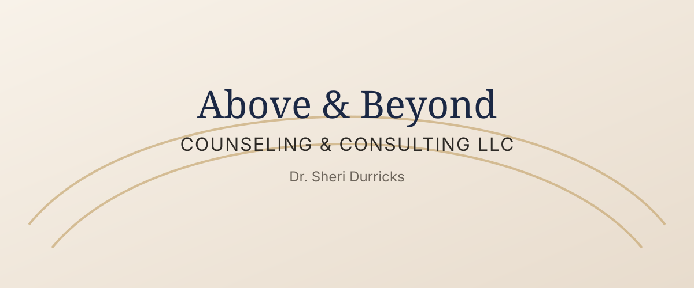

Individual Counseling
One-on-one therapeutic support designed to help you process pain, strengthen resilience, and recover emotional stability.

Faith-Integrated Counseling
Faith-integrated counseling and compassionate support for individuals navigating emotional exhaustion, trauma, anxiety, grief, leadership pressure, and life transitions.
Above & Beyond Counseling & Consulting LLC provides a safe, confidential space where healing, restoration, and emotional wellness come first.
Services
One-on-one therapeutic support designed to help you process pain, strengthen resilience, and recover emotional stability.
Clinical excellence paired with spiritual wisdom, honoring both emotional healing and your personal faith journey.
Focused support for anxiety, burnout, grief, and trauma so you can rediscover peace and renewed daily strength.
Inspirational and practical teaching experiences for churches, leaders, and organizations seeking wellness-centered growth.
Connect Today
Call today to begin with confidential, compassionate support designed around your emotional and spiritual well-being.
Phone: 856-588-3995
Schedule a Consultation